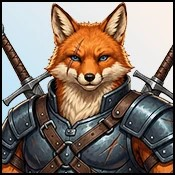

Player wiki noticeThis community-maintained page may contain gameplay, story, and mature-content spoilers.

概览
Theneas是一个 森林胡同的战友 他的当前内容包括普通的谈话和可重复的 灵魂石升级 这条路面覆盖了进入 爱和所有8个升级的食谱
地点和可用性
- 到达 皇家狩猎场(Edge).
- 选择 进入密道,则 去森林营两种旅行行动费用 0分钟.
- 森林胡同的入口需要 最新支持内容解锁( Neon Lattice)。如果入口被锁定,则重新编辑匹配的当前支持代码。
- 选择 Theneas 用于 Talk 或 Soul Stone 升级的肖像 。
Theneas 备查 每一小时,每一天 他的外表没有关系门 回到隐蔽的轨道 而小径返回狩猎场也耗时0分钟.
| 细节 | 数值 |
|---|---|
| 年龄 | 未知 |
| 大纪元/对齐 | 中世纪/中立 |
| 地点 | 森林营 |
| 最喜欢的条件 | Foxy 感情3000+ |
| 特殊关系技能 | 无配置 |
| 最喜欢的礼物 | 无配置 |
谈话和感情
与 Theneas 交谈 带 15分钟,给出 1个真爱,并允许 每天有三种正用途。所有三个需要45分钟。在计数器用完后,处理器会给出负面关系结果;在第二天继续。
列出的关系奖励是基础值. 最喜欢的STAT在达到阈值时会增加奖金,特殊的关系技巧会在共享随机卷前将调整的基数增加一倍. 设备,buffs和对齐可以进一步改变最终的奖励. 提高爱心不会取代追求旗帜或更早的心跳.
Theneas 异常最喜欢的状态检查 您的爱 Foxy,而不是玩家属性。 3000Foxy 爱,它补充 1改为调整后的基数 在普通关系修饰符和随机滚动之前。这是可选的 Talk 奖金,而不是满足Theneas 或使用其服务的要求。他没有配置将自己调整的基础增加一倍的特殊技能。
灵魂石升级要求
在他的肖像,选择 灵魂石升级它要求 高级权力 和 至少拥有一个灵魂石 陌生人已经足够;没有额外的感情要求。
森林胡同的支持者入口和该处的高电门是分开检查的。 0分钟,购买升级 没有额外的钱,晶体,能源或平静的成本.
在服务面板中选择一个自有的石头, 并供应食谱中三个无穷的 Dungeon 滴水。每次成功的购买都会提高该石头的当前水平 。 1它消耗 3个不同的滴中每个滴一个,而不是一滴的三份,石头本身仍然属于它。
完整升级食谱
| 拥有的石头 | 丢弃 1 | 丢弃 2 | 减 3 |
|---|---|---|---|
| 皇后石镇 | 1 吉德心脏 | 1 发光心平面 | 1 灵魂线索 |
| 剑石 | 1 Void - 触摸的方子 | 1 灵魂线索 | 1 吉德心脏 |
| 野蛮石 | 1 Void - 触摸的方子 | 1 诱发性Ichor | 1 发光心平面 |
| 元素石头 | 1 远方眼 | 1 诱发性Ichor | 1 发光心平面 |
| 平衡块 | 1 远方眼 | 1 灵魂线索 | 1 发光心平面 |
| light石 | 1 诱发性Ichor | 1 远方眼 | 1 Void - 触摸的方子 |
| 以太石头 | 1 吉德心脏 | 1 远方眼 | 1 诱发性Ichor |
| 幽灵石 | 1 吉德心脏 | 1 灵魂线索 | 1 Void - 触摸的方子 |
这些是 无尽的敦煌怪兽,使用当前库存名称。在此更新您已有的石头;该服务不授予缺失的石头,也不更换其购置路线。
购买处理器有 无级别上限 ,并在您可以支付食谱时支持重复升级。其菜单的每日大限不会造成每天一次升级的限制。所有三种成本都必须在成功扣除和级别提高之前到位。失败的采购不会提高水平。
服务奖没有Theneas情怀,玩家Erotic体验或NPC亲密体验.
建议的顺序和解决问题
- 解锁小屋的支持者入口,通过塞克路德铁道到达.
- 如果想要亲情,请每天使用最多三次谈话;不要推迟石质升级,以达到更高的关系阶段。
- 通过自己的内容获得一个支持的灵魂石,并确保拥有更高的电源.
- 然后选择灵魂石升级 购买升级
- 在资源最后的时候重复额外关卡 。
- 小屋入口被锁住了: 检查最新的支持者内容赎罪,而不是Foxy的感情.
- 服务时间: 请检查access-date=中的日期值 (帮助)
- 特定的石头不能升级: 你必须拥有那块石头即使另一块石头让你打开面板
- 我有三滴钱,但是付不起 菜单需要列出的每个类型之一。
- 服务没有爱意: 关系进展使用 Talk; 升级改变石质水平 。
- 没有日期或浪漫动作出现: 在Theneas目前的NPC内容中,没有日期、心与心、公寓亲密或工人招聘的配置。
信用和当前范围
对照当前字符验证,实际的Talk处理器,茅屋出行和支持者大门,定制最喜爱的条件解析器,Soul Stone服务和库存滴水名,现存的画廊肖像和维基的房子风格保留下来.
相关页面
Overview
Theneas is a scarred fox beastkin veteran at the Forest Hut in the Medieval Village Outskirts. His current content consists of ordinary Talk and a repeatable Soul Stone Upgrade service. This walkthrough covers access, affection and all eight upgrade recipes without revealing his personal history.
Location and Availability
- Reach Royal Hunting Grounds (Edge).
- Choose Go to Secluded Trail, then Go to Forest Hut. Both travel actions cost 0 minutes.
- The Forest Hut entrance requires the latest supporter content unlock (Neon Lattice). Redeem the matching current supporter code if the entrance is locked.
- Select Theneas's portrait for Talk or Soul Stone Upgrade.
Theneas is available all hours, every day at the hut. There is no relationship gate on his appearance. Return to Secluded Trail and the trail's return to the hunting grounds also cost 0 minutes.
| Detail | Value |
|---|---|
| Age | Unknown |
| Era / alignment | Medieval / Neutral |
| Location | Forest Hut |
| Favorite condition | Foxy affection 3,000+ |
| Special relationship skill | None configured |
| Favorite gift | None configured |
Talk and Affection
Talk to Theneas takes 15 minutes, gives 1 actual base affection, and allows three positive uses per day. All three take 45 minutes. After the counter is exhausted, the handler gives a negative relationship result; continue on the next game day.
Listed relationship rewards are base values. Favorite stats add bonuses when their thresholds are met, and the special relationship skill doubles the adjusted base before the shared random roll. Equipment, buffs and alignment can further change the final reward. Raising affection does not replace quest flags or earlier heart-to-hearts.
Theneas's unusual favorite condition checks your affection with Foxy, rather than a player attribute. At 3,000 Foxy affection, it adds 1 to the adjusted base before ordinary relationship modifiers and the random roll. This is an optional Talk bonus, not a requirement to meet Theneas or use his service. He has no configured special skill that doubles his own adjusted base.
Soul Stone Upgrade Requirements
At his portrait, choose Soul Stone Upgrade. It requires Higher Power and at least one owned Soul Stone from the eight listed below. Stranger is sufficient; there is no additional affection requirement.
The Forest Hut's supporter entrance and the service's Higher Power gate are separate checks. Opening the service costs 0 minutes, and purchasing an upgrade has no additional money, crystal, Energy or Calm cost.
Select an owned stone in the service panel and supply the recipe's three Infinity Dungeon drops. Every successful purchase raises that stone's current level by 1. It consumes one of each of three different drops, not three copies of one drop. The stone itself remains owned.
Complete Upgrade Recipes
| Owned stone | Drop 1 | Drop 2 | Drop 3 |
|---|---|---|---|
| Queenstone | 1 Gilded Heart | 1 Shimmering Heartscale | 1 Soul Thread |
| Sword Stone | 1 Void-Touched Fang | 1 Soul Thread | 1 Gilded Heart |
| Brute Stone | 1 Void-Touched Fang | 1 Mutagenic Ichor | 1 Shimmering Heartscale |
| Elemental Stone | 1 Abyssal Eye | 1 Mutagenic Ichor | 1 Shimmering Heartscale |
| Balance Stone | 1 Abyssal Eye | 1 Soul Thread | 1 Shimmering Heartscale |
| Twilight Stone | 1 Mutagenic Ichor | 1 Abyssal Eye | 1 Void-Touched Fang |
| Aether Stone | 1 Gilded Heart | 1 Abyssal Eye | 1 Mutagenic Ichor |
| Phantom Stone | 1 Gilded Heart | 1 Soul Thread | 1 Void-Touched Fang |
These are Infinity Dungeon monster drops, using the current inventory names. Upgrade your existing stones here; the service does not award a missing stone or replace its acquisition route.
The purchase handler has no level cap and supports repeated upgrades whenever you can pay the recipe. Its menu's large daily limit does not create a one-upgrade-per-day restriction. All three costs must be available before a successful deduction and level increase. Failed purchases do not raise the level.
The service awards no Theneas affection, player Erotic experience or NPC intimacy experience.
Recommended Order and Troubleshooting
- Unlock the hut's supporter entrance and reach it through the Secluded Trail.
- Use up to three daily Talks if you want affection; do not delay stone upgrades for a higher relationship stage.
- Obtain a supported Soul Stone through its own content and ensure Higher Power is available.
- Gather the exact three different Infinity drops for that stone, then choose Soul Stone Upgrade and purchase the upgrade.
- Repeat for additional levels while resources last.
- The hut entrance is locked: check the latest supporter content redemption, rather than Foxy affection.
- The service is absent: check Higher Power and ownership of at least one of the eight supported stones.
- A particular stone cannot be upgraded: you must own that particular stone, even if another stone lets you open the panel.
- I have three drops but cannot pay: the recipe requires one of each listed type.
- The service gave no affection: use Talk for relationship progress; upgrades change stone levels.
- No date or romance action appears: no date, heart-to-heart, apartment intimacy or worker recruitment is configured in Theneas's current NPC content.
Credits and Current Scope
Verified against the current character, actual Talk handler, hut travel and supporter gates, custom favorite-condition resolver, Soul Stone service and inventory drop names. The existing gallery portrait and the wiki's house style are retained.
Related Pages
Text adapted from the community-maintained Chronoromancer Wiki under CC BY-SA 4.0.